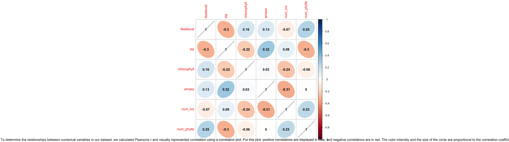
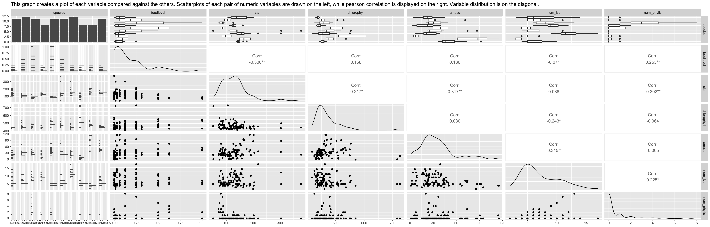
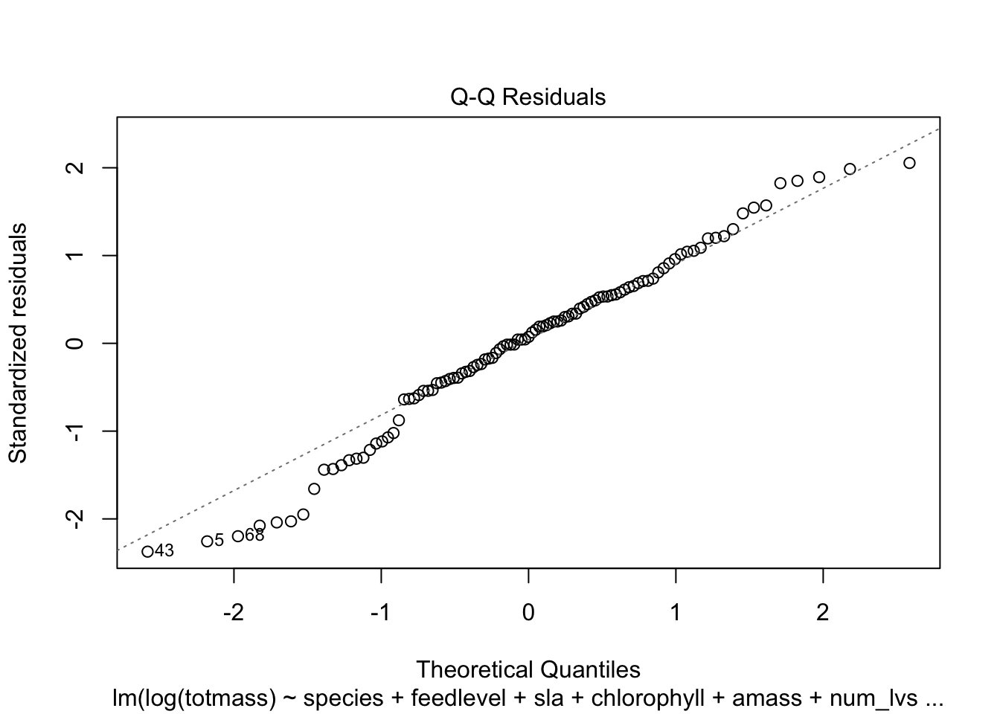
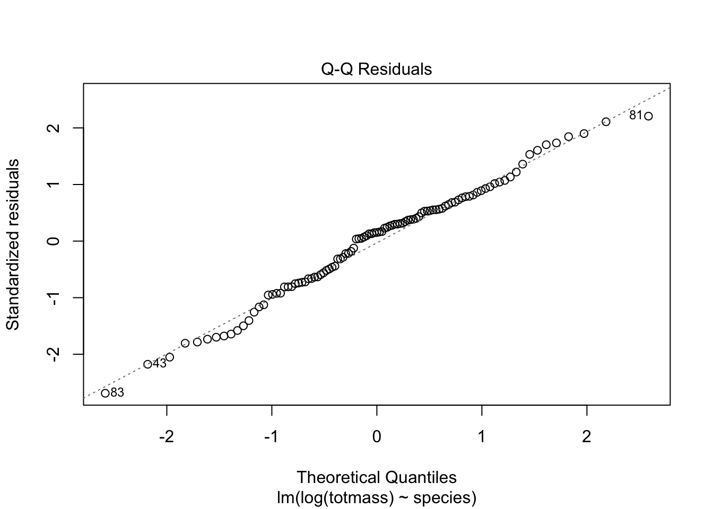

Code
library(tidyverse)
library(here)
library(janitor)
library(ggeffects)
library(performance)
library(naniar) # or equivalent
library(flextable) # or equivalent
library(car)
library(broom)
library(corrplot)
library(AICcmodavg)
library(GGally)Introduction: Sarrencia, otherwise known as the North American Pitcher plant, are the largest group of carnivorous plants and Sarrencia is one of the largest pitcher plant genera. According to the National Library of Medicine, the leaf extract of Sarrencia is a “traditional medicine for the treatment of type 2 diabetes”, and possesses “antimycobacterial activity for the treatment of tuberculosis-like symptoms” (Huang, 2022) . Pitcher plants could be useful to predict individual biomass from physiological adaptations because when pitcher plants have evolved to survive in nutrient-poor environments. Pitcher plants “attracts, traps, and digests prey, to absorb their soluble ingredients for growth and reproduction (Gray, 2022).” Predicting biomass for this physiological characteristic could be important because one could study how, depending on the plant’s biomass, each pitcher plant could absorb nutrients faster. The question we are thus addressing is how Sarracenia characteristics predict biomass. The hypothesis that we are testing is that Sarrencia characteristics do predict biomass.
Loading the libraries
library(tidyverse)
library(here)
library(janitor)
library(ggeffects)
library(performance)
library(naniar) # or equivalent
library(flextable) # or equivalent
library(car)
library(broom)
library(corrplot)
library(AICcmodavg)
library(GGally)Read in data
plant <- read_csv(here("data", "knb-lter-hfr.109.18", "hf109-01-sarracenia.csv")) %>%
# make the column names cleaner
clean_names() %>%
# selecting the columns of interest
select(totmass, species, feedlevel, sla, chlorophyll, amass, num_lvs, num_phylls)Methods: Sampling Methods: a. The data that was collected was collected by conducting a manipulative feeding experiment to test morphological and physiological allometric relationships of carnivorous plants when nutrients are not limiting are more similar to allometric relationships of non-carnivorous plants. The effects of prey availibility oh photosynthetic rate, chlorophyll fluorescence, growth, architecture, and foliar nutrient and chlorophyll content were tested.
The data was organized with 32 variables and 120 observations. The data was processed through through quarto document, where the relevant columns were selected (totmass, species, feedlevel, sla, chlorophyll, amass, num_lvs, num_phylls). The data was also cleaned by dropping the NA values.
Visualizing missing data:
gg_miss_var(plant) +
labs(caption = "This is a visualization of the missing data. This visualization shows that there is missing data for chlorophyll, amass, sla, num_phylls, and num_lvs.") +
theme(plot.caption = element_text(size = 7, hjust=0.5))This shows that the data may be affected due to the missing variables that are in this dataset. Due to the large amount of missing data from chlorophyll, amass, and sla, the precision of the findings may be impacted.
plant_subset <- plant %>%
drop_na(sla, chlorophyll, amass, num_lvs, num_phylls) #subsetting the data by dropping NAs
# calculate Pearson's r for numerical values only
plant_cor <- plant_subset %>%
select(feedlevel:num_phylls) %>%
cor(method = "pearson")
# creating a correlation plot
corrplot(plant_cor,
# change the shape of what's in the cells
method = "ellipse",
addCoef.col = "black")
title(sub="To determine the relationships between numerical variables in our dataset, we calculated Pearsons r and visually represented correlation using a correlation plot. For this plot, positive correlations are displayed in blue, and negative correlations are in red. The color intensity and the size of the circle are proportional to the correlation coefficients.")
Thus, while analyzing this plot, we can see that the strongest correlation is between amas (mass-based light-saturated photosynthetic rate of youngest leaf) and sla (specific leaf area of youngest fully-expanded leaf produced by the plant). The weakest (negative) correlation is with amass and num_lvs (total number of pitchers and phyllodes produced by each plant). This shows that there is a strong correlation between between the photosynthetic rate of the youngest leaf, with the specific leaf area.
plant_subset %>%
select(species:num_phylls) %>% #creating a ggpairs plot and selecting the num_phylls species
ggpairs(title = "This graph creates a plot of each variable compared against the others. Scatterplots of each pair of numeric variables are drawn on the left, while pearson correlation is displayed on the right. Variable distribution is on the diagonal.") #adding the caption
This, while analyzing this plot it shows that while analyzing the density plots along the diagonal, the data is skewed to the right, which indicates a positive skew. The scatter plots show that most of the data is clustered to the left, while the histograms and boxplots show that there are outliers and a variation within the distribution of the variables. All the correlation values are less than |0.5|, which indicates that there is not a strong correlation between the relationships between the variables.
null <- lm(totmass ~ 1, data = plant_subset) #using plant_subse data and using totmass as response variable
full <- lm(totmass ~ species + feedlevel + sla + chlorophyll + amass + num_lvs + num_phylls, data = plant_subset) #creating a model with all the predictor variables
null
Call:
lm(formula = totmass ~ 1, data = plant_subset)
Coefficients:
(Intercept)
6.022 full
Call:
lm(formula = totmass ~ species + feedlevel + sla + chlorophyll +
amass + num_lvs + num_phylls, data = plant_subset)
Coefficients:
(Intercept) speciesalata speciesflava speciesjonesii
-3.9556483 5.7430563 7.8471637 0.8654317
speciesleucophylla speciesminor speciespsittacina speciespurpurea
12.6365468 1.7674245 -4.1933985 -0.4017356
speciesrosea speciesrubra feedlevel sla
-0.3930562 4.0927812 -2.0816474 -0.0094688
chlorophyll amass num_lvs num_phylls
0.0111793 0.0001326 0.4668255 -0.0023333 To determine how species and physiological characteristics predict biomass, we fit multiple linear models. By analyzing the null and full model, we see both positive and negative between the predictor (totmass), and the response variable. Additionally, larger coefficients suggest a stronger impact on the response variable. For example. The correlation that is the weakest is with speciespsittacin, with a coefficient of -4.1934. The correlation that is the strongest is with speciesleucophylla, with a coefficient of 12.657.
par(mfrow = c(2, 2))
plot(full) #creating visual assumptions check plot
For the most part, the data looks normal. The residuals vs. fitted plot appears randomly scattered along the horizontal line. Similarly, the Q-Q Residuals also follows a line without any visual outliers. The Scale-Location plot also appears that the points are randomly scattered. However, the Residuals vs. Leverage plot does not follow a normal distribution as there is one clump towards the left side of the plot.
Explanation of any transformation and justification.
Model construction with visual and statistical assumption checks for three additional models
null_log <- lm(log(totmass) ~ 1, data = plant_subset)
full_log <- lm(log(totmass) ~ species + feedlevel + sla + chlorophyll + amass + num_lvs + num_phylls, data = plant_subset) #creating response variables that includes all the variables
plot(full_log) #plotting the full log 



In this case, the predictor variables are ‘species’, ‘feedlevel’, ‘sla’, ‘chlorophyll’, ‘amass’, ‘num_lvs’, and num_phylls’. These predictor variables were chosen because it would be useful to see how the response variable (log(totmass)) is correlated with all the selected predictor variables that we are testing for.
model2_log <- lm(log(totmass) ~ species, data = plant_subset)
plot(model2_log) #plotting model 2 log which uses species as predictor variable



In this case, the predictor variable was just ‘species’, while the response variable was (log(totmass)). This predictor variable was chosen to see if the species of the plants was affecting the relationship between total mass and species.
model3_log <- lm(log(totmass) ~ chlorophyll, data = plant_subset)
plot(model3_log) #plotting model 3 log which uses chlorophyll as predictor variable

In this case, the predictor variable was just ‘chlorophyll’, while the response variable was (log(totmass)). This predictor variable was chosen to see if the amount of chlorophyll of the plants was affecting the relationship between total mass and species.
model4_log <- lm(log(totmass) ~ species + sla + feedlevel + chlorophyll + num_lvs + num_phylls, data = plant_subset)
model4_log
Call:
lm(formula = log(totmass) ~ species + sla + feedlevel + chlorophyll +
num_lvs + num_phylls, data = plant_subset)
Coefficients:
(Intercept) speciesalata speciesflava speciesjonesii
-1.416411 1.141030 1.423339 0.321324
speciesleucophylla speciesminor speciespsittacina speciespurpurea
1.742155 0.404790 -1.645580 -0.411356
speciesrosea speciesrubra sla feedlevel
-0.836500 0.938543 -0.002139 -0.441063
chlorophyll num_lvs num_phylls
0.004572 0.090046 -0.035846 car::vif(full_log) #evaluating multicollinearity GVIF Df GVIF^(1/(2*Df))
species 42.351675 9 1.231351
feedlevel 1.621993 1 1.273575
sla 1.999989 1 1.414210
chlorophyll 1.949828 1 1.396362
amass 2.872084 1 1.694722
num_lvs 2.813855 1 1.677455
num_phylls 2.995510 1 1.730754We evaluated multicollinearity by calculating generalized variance inflation factor and determined that species has the highest GVIF, which suggests that this is a high degree of multicollinearity with the other predictor variables. The inflation factors is 1.23 which indicates that the standard error is inflated by a factor of 1.23 due to multicollinearity. Thus, species has the highest degree of multicollinearity, which makes it more challenging to interpret the individual effects of the predictor variables and the response variable.
AICc(full_log) #compare full model using Akaike’s Information criterion (AIC) values[1] 133.9424AICc(null_log) #compare null model using Akaike’s Information criterion (AIC) values[1] 306.0028AICc(model2_log) #compare model2 log using Akaike’s Information criterion (AIC) values[1] 157.5751AICc(model3_log) #compare model 3 using Akaike’s Information criterion (AIC) values[1] 307.368AICc(model4_log) #comare model 4 using Akike's Information criterion (AIC) values[1] 131.7899MuMIn::model.sel(full_log, model2_log, null_log) #creating model selection tableModel selection table
(Int) ams chl fdl num_lvs num_phy sla spc df
full_log -1.3390 0.002338 0.004368 -0.4743 0.09176 -0.03959 -0.002493 + 17
model2_log 0.8836 + 11
null_log 1.3500 2
logLik AICc delta weight
full_log -46.371 133.9 0.00 1
model2_log -66.337 157.6 23.63 0
null_log -150.941 306.0 172.06 0
Models ranked by AICc(x) Results: 8a. We found that the 4th model including all the predictor variables except amas(mass-based light-saturated photosynthetic rate of youngest leaf) best predicted the relationship between the characteristics and biomass. This model was chosen because between all the models, this model had the lowest AIc value.
summary(model4_log)
Call:
lm(formula = log(totmass) ~ species + sla + feedlevel + chlorophyll +
num_lvs + num_phylls, data = plant_subset)
Residuals:
Min 1Q Median 3Q Max
-0.9201 -0.1903 0.0378 0.2146 0.8081
Coefficients:
Estimate Std. Error t value Pr(>|t|)
(Intercept) -1.416411 0.588187 -2.408 0.018123 *
speciesalata 1.141030 0.180142 6.334 9.83e-09 ***
speciesflava 1.423339 0.261279 5.448 4.58e-07 ***
speciesjonesii 0.321324 0.195981 1.640 0.104666
speciesleucophylla 1.742155 0.223143 7.807 1.14e-11 ***
speciesminor 0.404790 0.186446 2.171 0.032617 *
speciespsittacina -1.645580 0.206577 -7.966 5.44e-12 ***
speciespurpurea -0.411356 0.246635 -1.668 0.098896 .
speciesrosea -0.836500 0.218074 -3.836 0.000235 ***
speciesrubra 0.938543 0.178576 5.256 1.02e-06 ***
sla -0.002139 0.001066 -2.007 0.047854 *
feedlevel -0.441063 0.230113 -1.917 0.058519 .
chlorophyll 0.004572 0.001158 3.947 0.000159 ***
num_lvs 0.090046 0.022256 4.046 0.000112 ***
num_phylls -0.035846 0.051379 -0.698 0.487217
---
Signif. codes: 0 '***' 0.001 '**' 0.01 '*' 0.05 '.' 0.1 ' ' 1
Residual standard error: 0.4121 on 88 degrees of freedom
Multiple R-squared: 0.8678, Adjusted R-squared: 0.8468
F-statistic: 41.26 on 14 and 88 DF, p-value: < 2.2e-16table <- tidy(model4_log, conf.int = TRUE, exponentiate = TRUE) %>%
# change the p-value numbers if they're really small
# change the estmaes, standard error, and t-tstatistics to round to ___ digits
# using mutate
# make it into a flextable
flextable() %>%
# fit it to the viewer
autofit()
tableterm | estimate | std.error | statistic | p.value | conf.low | conf.high |
|---|---|---|---|---|---|---|
(Intercept) | 0.2425831 | 0.588186899 | -2.4080968 | 0.018123036779720582 | 0.0753728 | 0.7807400 |
speciesalata | 3.1299918 | 0.180141519 | 6.3340778 | 0.000000009830700015 | 2.1881074 | 4.4773162 |
speciesflava | 4.1509587 | 0.261279078 | 5.4475825 | 0.000000458397292905 | 2.4697133 | 6.9767039 |
speciesjonesii | 1.3789518 | 0.195980889 | 1.6395661 | 0.104665656188666148 | 0.9341230 | 2.0356078 |
speciesleucophylla | 5.7096366 | 0.223142504 | 7.8073668 | 0.000000000011444365 | 3.6645537 | 8.8960221 |
speciesminor | 1.4989871 | 0.186446329 | 2.1710784 | 0.032616880915059161 | 1.0348606 | 2.1712705 |
speciespsittacina | 0.1929007 | 0.206577203 | -7.9659302 | 0.000000000005439276 | 0.1279509 | 0.2908200 |
speciespurpurea | 0.6627508 | 0.246635363 | -1.6678720 | 0.098895985334243125 | 0.4059634 | 1.0819660 |
speciesrosea | 0.4332241 | 0.218074387 | -3.8358482 | 0.000234842152805079 | 0.2808661 | 0.6682298 |
speciesrubra | 2.5562549 | 0.178576377 | 5.2556966 | 0.000001019827076707 | 1.7925877 | 3.6452549 |
sla | 0.9978632 | 0.001065964 | -2.0066698 | 0.047854470339071746 | 0.9957516 | 0.9999793 |
feedlevel | 0.6433520 | 0.230113356 | -1.9167214 | 0.058518540462090936 | 0.4072349 | 1.0163713 |
chlorophyll | 1.0045821 | 0.001158194 | 3.9471842 | 0.000158814428286257 | 1.0022725 | 1.0068969 |
num_lvs | 1.0942245 | 0.022256261 | 4.0458665 | 0.000111655874291739 | 1.0468820 | 1.1437079 |
num_phylls | 0.9647889 | 0.051378886 | -0.6976788 | 0.487217407023181059 | 0.8711416 | 1.0685032 |
This model indicates that there is a significant relationship between most of the response variables and the biomass. All of the p-values, except for feed level is less .05, which indicates that the predictor variable has a significant effect on the response variable (biomass). The F-statistic is also 41.26 with a p-value less than 0.05 which indicates that the model as a whole is statistically significant.
We transformed the model by adding log, to ensure that the model would fit more precisely into our visualizations. Otherwise, the data would look skewed because the numbers are too big/too small.
model_pred <- ggpredict(model4_log, terms = "species", back.transform = TRUE) #creating ggpredict plot
plot(ggpredict(model4_log, terms = "species", back.transform = TRUE), add.data = TRUE) + #response variable is species
labs(caption = "Visualization of model predictions, which shows the relationship between species and the biomass. This graph shows that there is a strong correlation between species and biomass.") +
theme(plot.caption = element_text(size = 6, hjust=0.5)) #adjusting caption plot size9.Bibliography
Ashworth, James. “Pitcher Plants Might Be Luring in Prey Using Specialised Scents.” Natural History Museum, www.nhm.ac.uk/discover/news/2023/april/pitcher-plants-might-be-luring-prey-specialised-scents.html. Accessed 6 June 2023.
Gray, Sarah M., et al. “The Bacterial Composition within the Sarracenia Purpurea Model System: Local Scale Differences and the Relationship with the Other Members of the Food Web.” PLOS ONE, journals.plos.org/plosone/article?id=10.1371%2Fjournal.pone.0050969. Accessed 6 June 2023.
Huang, Yen-Hua, et al. “Anticancer and Antioxidant Activities of the Root Extract of the Carnivorous Pitcher Plant Sarracenia Purpurea.” Plants (Basel, Switzerland), 23 June 2022, www.ncbi.nlm.nih.gov/pmc/articles/PMC9269354/.